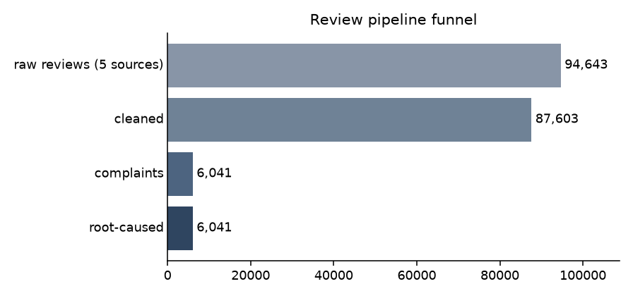
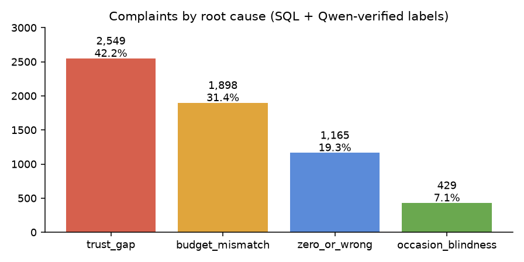
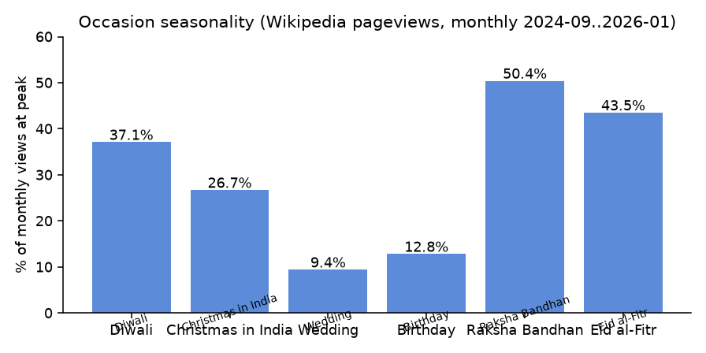
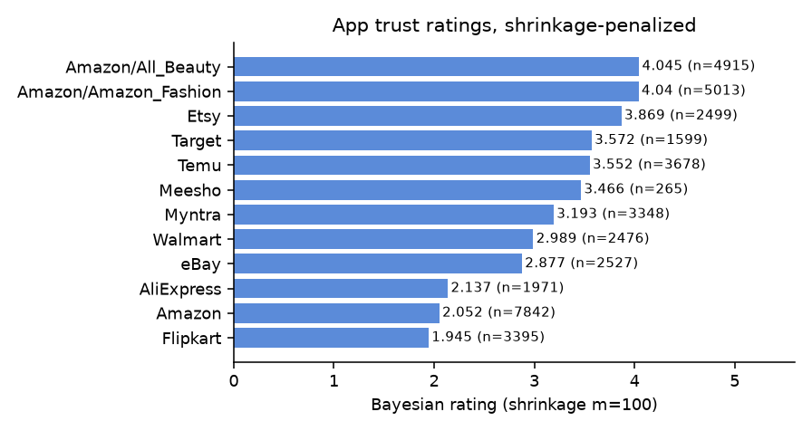

Pipeline funnel

Corpus by source
clean rows after dedup/language/PII stages
Study results (n=150)
Evidence figures
Complaints by root cause
SQL lexicon scoring over 6,041 complaints; 238 labels overridden by Qwen-verified labels (600 stratified sample).

Agent decision audit
Occasion seasonality (Wikipedia pageviews, monthly)
Peak-month share of each occasion article's monthly views, Sep 2024 - Jan 2026.

What shoppers actually type (Google Suggest, IN)
Live autocomplete phrasing captured 2026-11-03 (hl=en-IN, gl=in) - budget + gift + occasion in one query.
Bayesian app ratings
(C·m + sum)/(m+n), C = global mean, m = 100. Low-Rating-heavy apps shrink toward the mean - the honest trust ranking.

Live mini-extraction probe
Pulls fresh public reviews right now - the same tool the agent uses. Source: Vercel probe API when deployed, else direct App Store RSS (CORS-open).
Pick an app and fetch - results appear here.